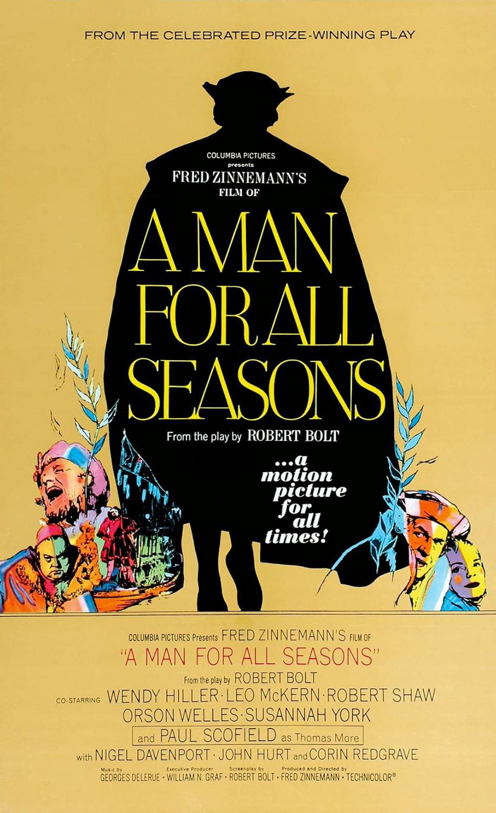

A Man for All Seasons
39th Academy Awards
(Oscars 1967)
8 Nominations, 6 Awards
| Nominations | ||
|---|---|---|
| Category | Nominees | Result |
| Best Picture | Fred Zinnemann | Won |
| Actor | Paul Scofield | Won |
| Actor in a Supporting Role | Robert Shaw | Nominated |
| Actress in a Supporting Role | Wendy Hiller | Nominated |
| Directing | Fred Zinnemann | Won |
| Writing (Screenplay--based on material from another medium) | Robert Bolt | Won |
| Cinematography (Color) | Ted Moore | Won |
| Costume Design (Color) | Elizabeth Haffenden and Joan Bridge | Won |